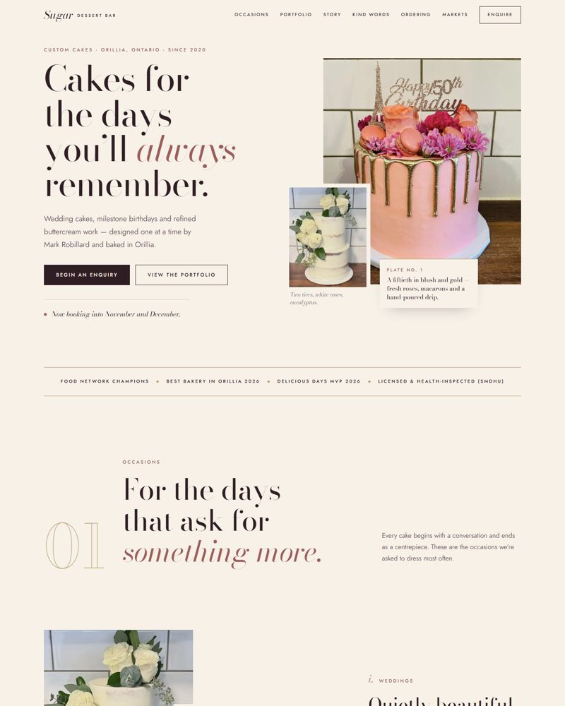
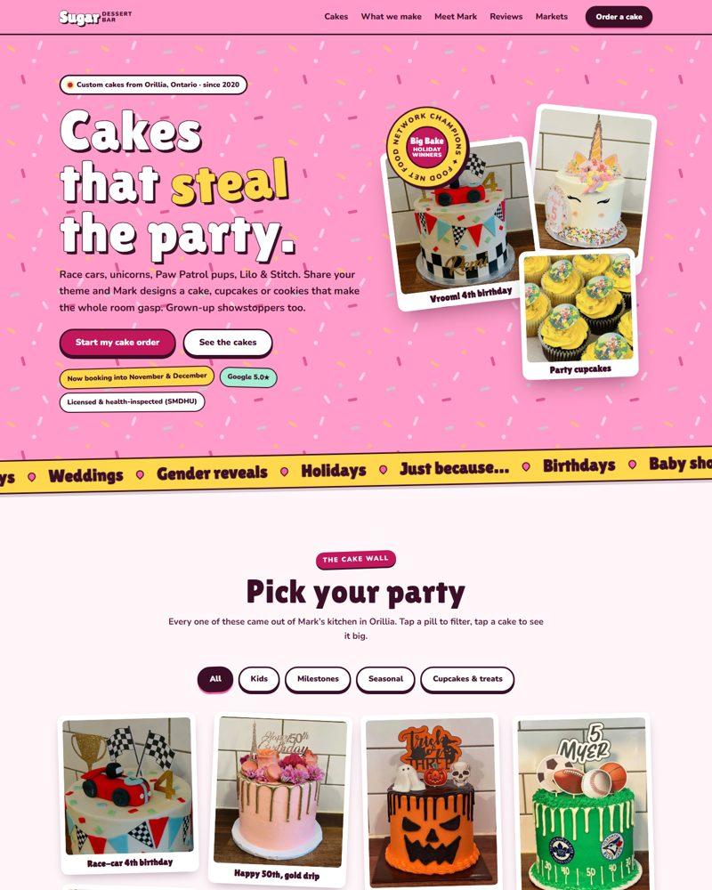
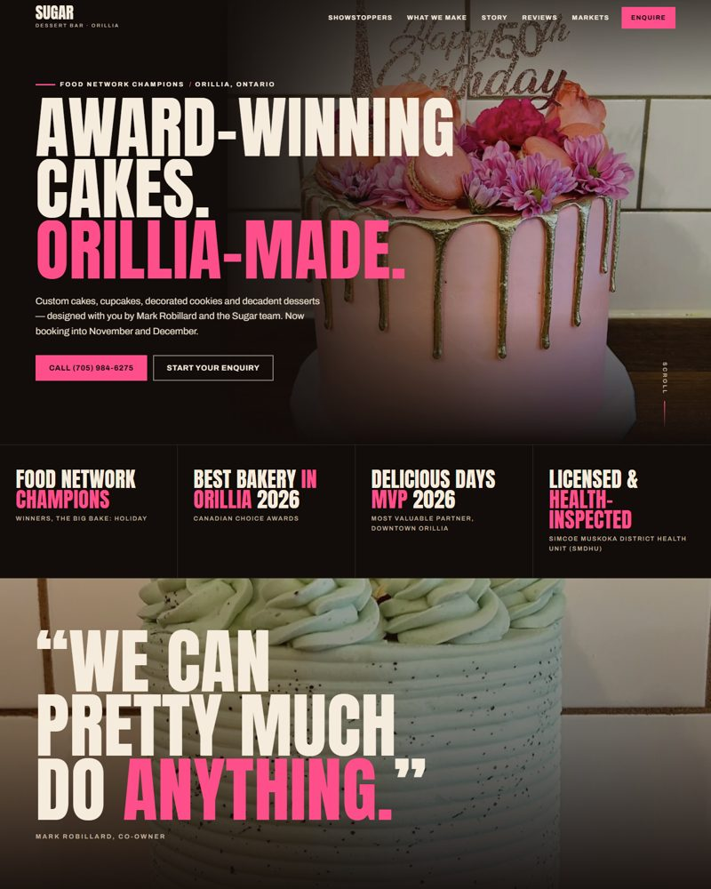

Concept 01
The Atelier
Elegant and editorial, like a wedding magazine. Ivory, cocoa and blush with refined serif type. Leads with weddings and milestone cakes.
Open concept 1 →
Concept 02
Party Mode
Bright, playful and fun. Bubblegum pink, sticker-style photos and a filterable cake gallery. Leads with birthday and character cakes.
Open concept 2 →
Concept 03
Champions
Dark, cinematic and bold. Big type and a short title-sequence intro that puts the Food Network win and Best Bakery award front and centre.
Open concept 3 →